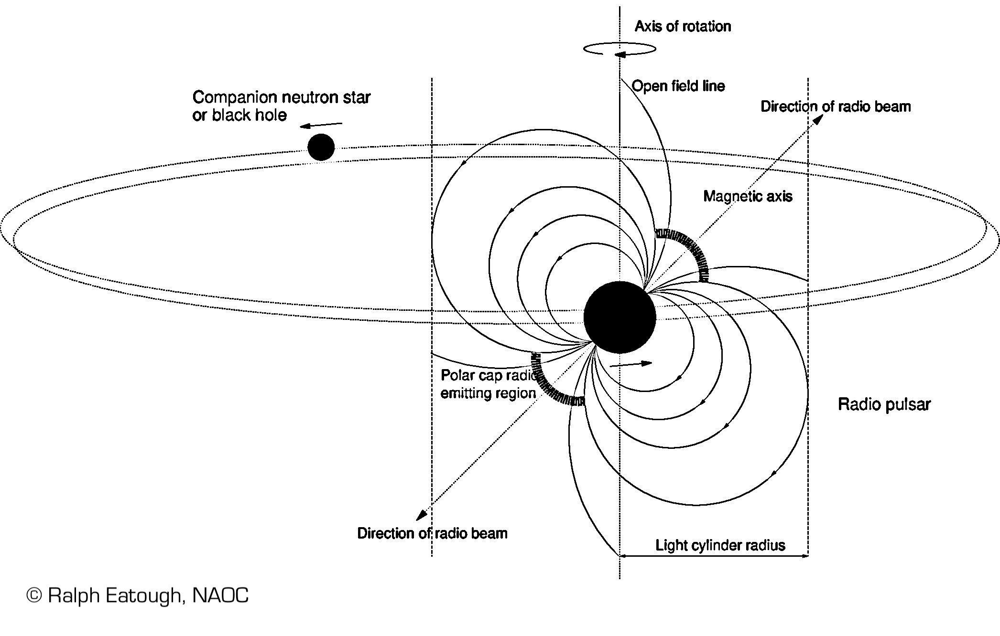

I'm working at the National Astronomical Observatories of the Chinese Academy of Sciences (NAOC) in Beijing. I'm a pulsar data processing expert in the FAST operations and development research group, under the CAS President's International Fellowship Initiative (PIFI). My research interests are in searches for undiscovered pulsars and their subsequent study. In particular, I am trying to find pulsars in exciting locations where they have not yet been detected. Examples might include pulsar black hole binary systems; pulsars orbiting the supermassive black hole at the centre of our Galaxy; or pulsars at great distances in external galaxies.
I'm also interested in optimizing and developing pulsar search algorithms for speed and efficiency, and applications of Artificial Intelligence in pulsar searches through machine learning (see here).
Please read here to learn about what pulsars are and how they can be used in astronomy and fundamental physics.
SUPERNOVA: After a massive star has used up all of its nuclear fuel, gravity takes over and it collapses in a tremendous explosion known as a supernova. A pulsar is the ultra-compact star that is left behind. These unique objects are as massive as the Sun but have a diameter of just 20 km!
LIGHTHOUSES IN SPACE: Pulsars are in fact neutron stars visible through their characteristic "pulses" of emission (usually observed at radio wavelengths but often also in gamma-rays and X-rays). So why do pulsars pulse? Pulsars are highly magnetised and their electromagnetic emission is beamed along the stars magnetic poles. They are also spinning very quickly on an axis that is typically inclined to the magnetic field. This causes the emission to sweep out across space much like a lighthouse beam. If the beam sweeps past the Earth, we can detect a "pulse" of emission with large radio telescopes like FAST.
ATOMIC CLOCKS: Not only are pulsars fascinating objects in their own right, they are extremely useful tools in astrophysics and many areas of fundamental physics. Their accuracy lies in precise knowledge of the rotational phase through the process of pulsar timing. An example of the precision that can be achieved through pulsar timing can be seen in the spin period of PSR B1937+21
P = 0.001557806468819794 ± 0.000000000000000002 seconds
(Kaspi et al. 1994, ApJ.)
For more info on pulsars, see for example this
Britannica article.

Below I've highlighted some of my central publications. For my full paper list see NASA ads.
The Astrophysical Journal
NASA ADS LinkMonthly Notices of the Royal Astronomical Society
NASA ADS LinkThe Astrophysical Journal
NASA ADS LinkNature
NASA ADS LinkMonthly Notices of the Royal Astronomical Society
NASA ADS LinkMonthly Notices of the Royal Astronomical Society
NASA ADS Link{kind=link}
{kind=link}
{kind=link}